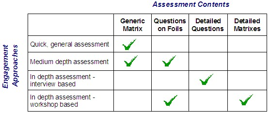

1. Select the services to be assessed. It is critical to scope a service assessment engagement correctly and to define
the services at an appropriate level.
2. Determine how you will use the technique. It is provided in two formats - questions, and matrices, and in two levels
of detail. Any of these components of the technique could be used in interview or workshop mode, or both. The choice
will depend on the time you have, and the level of detail you need to support your mandate.

3. Review assessment questions and matrices, and select service attributes to be assessed, and modify as required.
Depending on the type of service and your mandate, you may not need to ask all questions, or to assess all attributes
of each service. For example, services such as ‘Ensuring availability of servers’ may not need to focus on the human
interactions as much as a service that relies on people for delivery.
4. Determine data sources, and assess each service using either the questions or the generic matrix. It is essential to
understand the provider and customer views. You may capture the data through various means. If workshops are your
preferred method of working, then you may find the matrixes most suitable.
5. To gather the user viewpoint a survey based on some of the questions, reworded to be understandable by users, might
be appropriate. A key element of a service assessment is to understand the gaps between expectations and
delivery.
6. Consolidate assessment facts and findings.
7. Determine if you need to delve into how the service is delivered i.e. To assess the underlying processes to be able
to meet your mandate. If so, determine which processes are required for each of the services you wish to are to assess
in depth.
8. Assess each of the processes using your preferred technique, such as the process assessment matrixes found on the
ITPM intellectual capital databases. Note: some consultants have combined several process assessment matrixes into a
single matrix to aid in assessing all the underlying processes for a service.
9. Analyze the data gathered during the assessments.
10.Determine conclusions and recommendations and complete your report.
|